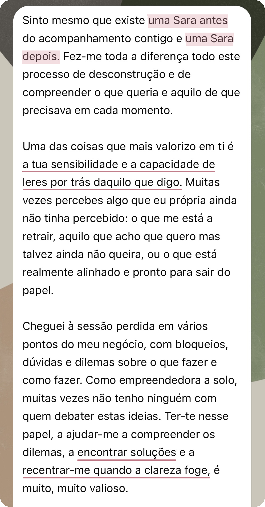
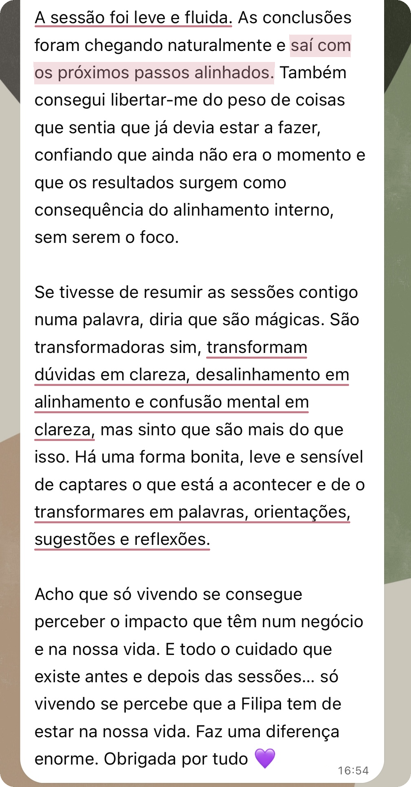
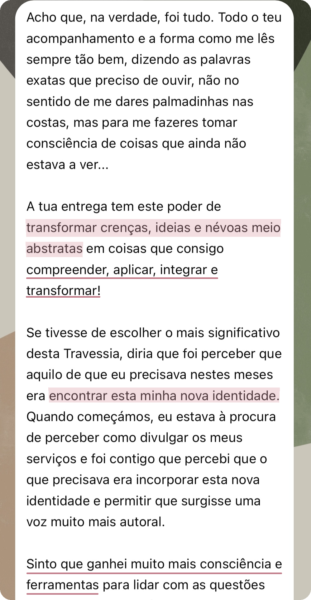
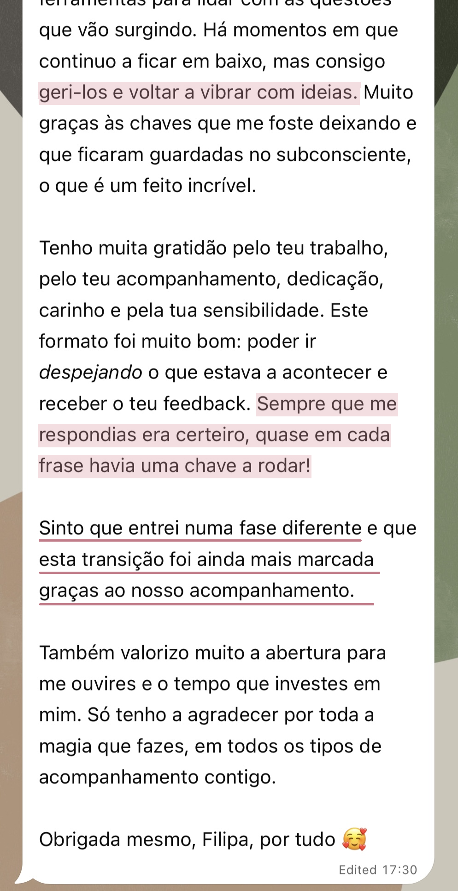
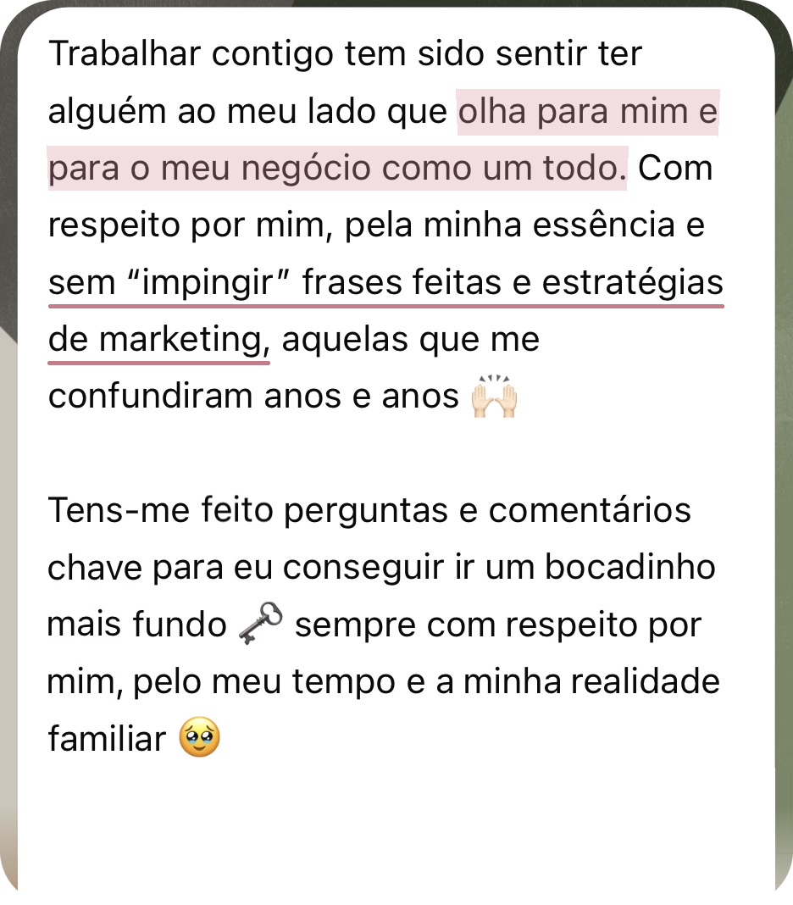
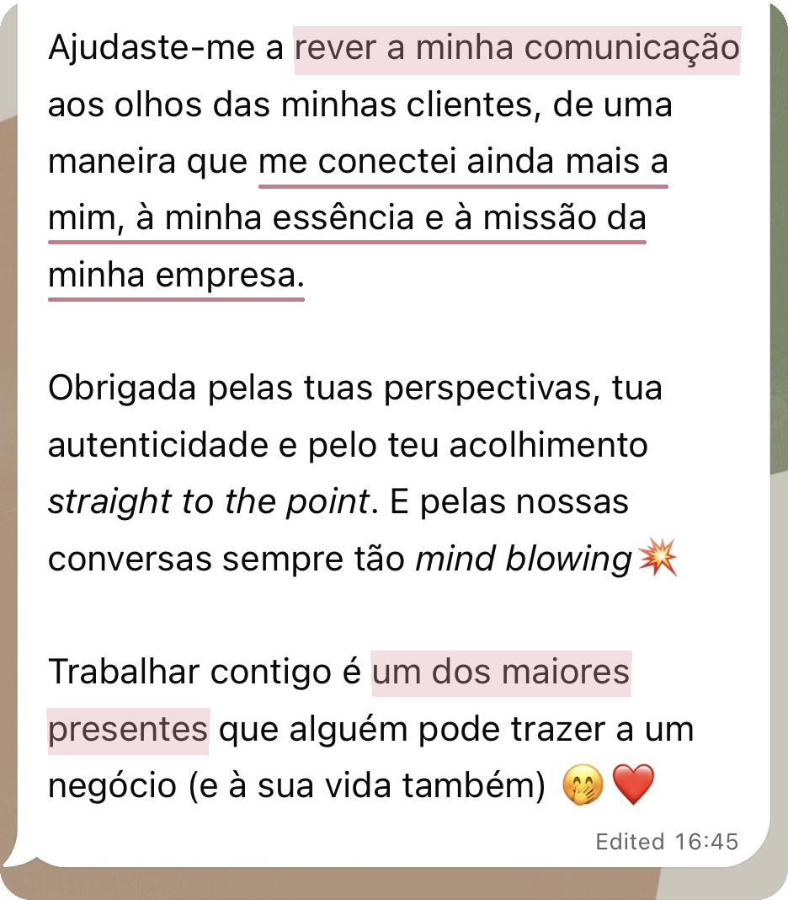

Uma nova forma de te veres a ti, ao teu negócio e de escolheres como queres ser vista/o
A CEEN é um trabalho individual de análise e orientação estratégica para reveres a oferta, a comunicação ou a forma de trabalhar no teu negócio, sem separar essas decisões de quem és e da vida que queres construir.
Podes chegar com uma questão concreta ou com várias áreas que gostarias de rever em conjunto. Enquanto te escuto, presto atenção à forma como falas sobre o negócio, ao que te entusiasma ou retrai, ao peso que atribuis a determinadas decisões e às contradições que possam surgir.
Esta escuta ajuda-nos a reconhecer crenças, receios e padrões que podem estar a influenciar as tuas escolhas, mesmo quando ainda não os identificas. Relacionamos o que observamos com a realidade do negócio e com aquilo que desejas mudar.
Ajudo-te a reconhecer o que faz sentido manter, reformular ou deixar e apresento recomendações concretas para decidires os próximos passos.
Por vezes, o maior desafio não é construir o negócio,
é mudar a forma como te vês e te posicionas nele...
O negócio é o centro da CEEN, mas não é observado separadamente de ti.
A tua identidade, energia, capacidade, desejos e momento de vida ajudam-nos a reconhecer o que ainda te representa e como queres continuar a trabalhar e evoluir.
A CEEN é pensada para profissionais independentes e empreendedores que vendem serviços, consultas, sessões, programas, cursos ou produtos e infoprodutos criados a partir do seu conhecimento e experiência.
As pessoas escolhem-te pelo teu olhar, pela tua abordagem, pelo teu método ou pela forma como entregas o trabalho. Quer o negócio tenha o teu nome ou uma marca própria, és uma parte central do valor que ele oferece.
Já tens uma atividade em funcionamento, com ofertas, comunicação, clientes ou tentativas de venda. Agora, desejas perceber o que queres continuar a desenvolver, como o apresentar e de que forma o queres entregar, totalmente alinhado contigo.
Sem fórmulas alheias e tentativas de caber em caixinhas!
Talvez sucesso profissional signifique, para ti, crescer, aumentar o rendimento ou chegar a mais pessoas. Talvez signifique ter mais tempo livre, mais autonomia, reconhecimento, impacto ou realização. Ou talvez seja tomar decisões com confiança, relacionar-te com o teu trabalho com mais leveza e deixares de viver certas questões profissionais com tanto desgaste emocional.
Podes já ter alcançado resultados que, para ti, representaram sucesso e, ainda assim, sentir que a forma como trabalhas hoje deixou de te representar. Isso não retira valor ao que construíste. Pode apenas indicar que chegou o momento de o reformular para acompanhar a tua evolução.
Na CEEN, não partimos do princípio de que existe algo de errado contigo ou com o teu negócio, nem de que existe uma versão ideal à qual deverias corresponder ou uma fórmula de sucesso que deverias seguir. A melhor estratégia é a que se adequa a ti! E rever o que construíste não retira valor ao teu percurso; permite-te escolher como queres continuar.
Podes querer alcançar novos resultados e, ao mesmo tempo, mudar a forma como os estás a construir. Estas duas necessidades podem fazer parte do mesmo momento do negócio:
RESULTADOS E DIREÇÃO
COMO ESTÁS NO NEGÓCIO
Nem todas as dificuldades se resolvem com uma nova estratégia.
Por vezes, a dificuldade em cobrar, delegar ou comunicar está também ligada ao que essa decisão significa para ti, não apenas à falta de um plano.
Na CEEN, ligamos as decisões de negócio à pessoa que és e ao que estás a viver, porque cada escolha é também influenciada pelo que desejas, pelo que receias e pelo que estás disponível para sustentar.
A clareza não faz a mudança por ti, mas pode encurtar o tempo que passas a insistir numa direção que te esgota, a adiar decisões ou a tentar resolver apenas no negócio aquilo que também precisa de ser reconhecido em ti.
Quando estás dentro do negócio, pode ser difícil distinguir o que continua a fazer sentido daquilo que manténs por hábito, receio ou expectativa. Ao devolver-te o que reconheço na forma como falas e colocar perguntas sobre o que parece contraditório, ajudo-te a ver diferenças que podem passar despercebidas quando pensas sozinha/o. Não para escolher por ti, mas para que possas reconhecer o que realmente queres continuar a desenvolver.
Este caso mostra como esse trabalho pode mudar uma decisão sobre a oferta:
Rever a oferta é também reconhecer o que já não te representa
Esta cliente chegou à sessão convencida de que queria continuar a apostar em determinados serviços. Racionalmente, pareciam-lhe as opções mais seguras e aquelas que faziam mais sentido manter.
Através das perguntas que lhe coloquei e das devoluções sobre a forma como falava de cada um dos serviços, foi a própria cliente que reconheceu que aquilo que acreditava que "deveria" manter já não correspondia ao que realmente queria desenvolver.
Decidiu concentrar a oferta e a comunicação nos serviços que continuavam a despertar o seu entusiasmo e, depois dessa mudança, voltou a gerar vendas.
O negócio já não estava a gerar vendas como antes e a cliente distribuía a sua atenção por vários serviços. Alguns pareciam-lhe opções seguras e, por isso, acreditava que queria continuar a apostar neles.
À medida que falava sobre cada serviço, fui colocando perguntas e devolvendo-lhe diferenças, tensões e contradições que surgiam na forma como os descrevia.
Estas devoluções não serviram para lhe dizer quais deveria manter ou deixar. Funcionaram como um espelho para que pudesse reconhecer, por si própria, que alguns serviços eram sustentados sobretudo pelo hábito, pela segurança e pela ideia de que deveriam continuar por já fazerem parte do negócio.
Essa diferença ainda não era clara para ela antes da sessão.
A cliente distinguiu os serviços que acreditava que "deveria" manter daqueles que queria verdadeiramente continuar a desenvolver.
Decidiu concentrar a oferta e a comunicação nestes últimos e, depois dessa mudança, voltou a receber pedidos e a gerar vendas.
A CEEN não escolheu por ela. Ajudou-a a ver com clareza para poder escolher.
Na prática, a CEEN cruza duas dimensões: o que orienta as tuas escolhas e a forma como essas escolhas se traduzem no negócio.
DIMENSÃO ENERGÉTICA ·
A PESSOA QUE O CONDUZ
Reconhecer o que te mobiliza, retrai ou esgota e como isso influencia as tuas escolhas e o papel que desejas ocupar no negócio.
Consoante o que for mais relevante no teu momento, podemos observar a tua energia natural, desejos, crenças e padrões: elementos que influenciam aquilo que escolhes, comunicas e consegues sustentar.
DIMENSÃO ESTRATÉGICA ·
A TRADUÇÃO NO NEGÓCIO
Traduzir essa leitura em critérios, prioridades e recomendações concretas para a próxima fase do negócio.
Consoante a questão ou a profundidade do trabalho, podemos observar ofertas, serviços, preços, posicionamento, comunicação, conteúdos, páginas de vendas, website, formatos de entrega, responsabilidades e decisões.
Observar sem estruturar pode trazer mais consciência, mas deixar-te sem saber o que fazer com ela. Estruturar sem observar pode levar-te a escolher uma estratégia que não consegues ou não desejas sustentar. É neste diálogo entre energia e estratégia que a CEEN acontece.
“Nunca ninguém tinha olhado para o meu negócio desta forma!”
— comentário de uma cliente durante uma Sessão CEEN
Se quiseres aprofundar a abordagem, abre os temas abaixo: como as áreas do negócio se influenciam e como a tua energia entra nas decisões profissionais.
Olhar para o negócio como um sistema é observar, em simultâneo, a pessoa que o conduz, a identidade que o orienta, a estrutura que o sustenta, as relações que cria e as trocas que tornam possível a sua continuidade.
Consoante o teu momento, podemos observar:
Estas dimensões influenciam-se mutuamente: uma mudança no posicionamento pode pedir outra oferta; uma alteração na oferta pode transformar a comunicação e a entrega; e uma nova fase de crescimento pode exigir outra estrutura ou diferentes responsabilidades.
Trabalho e dinheiro estão relacionados, mas não são a mesma coisa. Mais esforço, mais horas ou maior disponibilidade não se traduzem automaticamente em mais rendimento. O crescimento não é verdadeiramente sustentável se aumentar os resultados à custa do teu tempo, da tua vontade ou da tua vitalidade.
Esta visão não serve para criar explicações fechadas. Ajuda-nos a formular hipóteses, reconhecer relações e perceber o que faz sentido criar, manter, reorganizar ou transformar.
Na CEEN, energia pessoal não significa apenas disposição ou cansaço. É a disponibilidade que resulta da interação entre dimensões físicas, mentais, emocionais, sociais e subtis e que influencia a tua capacidade de criar, decidir, relacionar-te e assumir responsabilidades.
Uma decisão profissional não depende apenas da análise racional. Também é influenciada pelo que sentes que podes ganhar, perder, provar ou proteger através dela. Por exemplo:
Na CEEN, estes elementos são sempre relacionados com a realidade concreta do negócio e com as escolhas que tens pela frente. Desta forma, aproximamos estratégia, marketing, identidade e intenção.
A CEEN não substitui consultoria técnica nem execução especializada. Podemos observar ofertas, preços, comunicação, páginas de vendas ou decisões e identificar relações e possíveis alterações. Não estão incluídas auditorias técnicas aprofundadas, planeamento integral, copywriting ou implementação feita por mim.
O meu papel é escutar, questionar, formular hipóteses, ligar pontos e apresentar recomendações concretas. As decisões finais continuam a ser sempre tuas.
"Transformam dúvidas em clareza, desalinhamento
em alinhamento e confusão mental em clareza."— mensagem transcrita de um áudio de uma cliente


Tenho formação em Gestão, Controlo de Gestão, Negócios Internacionais e Estratégia, em instituições de ensino de referência, e experiência nas áreas financeira e de gestão em empresas portuguesas de grande dimensão.
Nos últimos anos, aprofundei o estudo do comportamento humano, da identidade, da infância, das crenças e dos padrões inconscientes, bem como da linguagem simbólica através da qual o inconsciente se expressa. Aprofundei também a visão sistémica aplicada às relações, à liderança e aos negócios.
Este percurso foi consolidado através do acompanhamento de clientes nos seus processos de autoconhecimento, a compreender crenças e padrões que as afastam de si e a aproximarem-se da sua essência, na forma como se veem, escolhem e vivem.
Hoje, junto estas duas vertentes numa prática que combina capacidade de análise e escuta atenta, com clareza, sensibilidade e frontalidade, e um olhar que vai além.
↑ Voltar a explorar a CEEN desde início"Tu consegues tão bem captar, dirigir, interpretar e transformar em palavras,
em orientações, em conselhos, em sugestões e em reflexões em conjunto."— feedback de uma cliente num áudio durante o seu acompanhamento comigo
Esta forma de trabalhar pode fazer sentido para ti se…
O que melhor descreve o teu momento?
Uma questão concreta · Sessão CEEN
Várias áreas interligadas · Ciclo CEEN
O formato pensado para isto é a Sessão CEEN.
Ver como funciona a Sessão CEENO formato pensado para isto é o Ciclo CEEN.
Ver como funciona o Ciclo CEENNão precisas de começar por uma Sessão CEEN para chegares ao Ciclo CEEN.
Se já reconheces que a questão atravessa várias áreas, podes marcar diretamente o ciclo.
NA SESSÃO CEEN
NO CICLO CEEN
O Ciclo CEEN é um processo de análise e direção,
não um acompanhamento contínuo.
Entre as duas sessões, os três dias de partilha e os esclarecimentos que eu possa pedir servem para completar a leitura do negócio e preparar a proposta. Não incluem apoio contínuo para implementar as recomendações ou trabalhar as novas questões que surjam no dia a dia.
Depois da segunda sessão, a entrega do Ciclo fica concluída. A partir daí, podes avançar autonomamente ou marcar uma nova Sessão CEEN.
"Quase em cada frase havia uma chave a rodar"
Neste testemunho, a cliente descreveu o que mudou quando passou a ter mais consciência, ferramentas e apoio para lidar com aquilo que ia surgindo no seu processo de negócio:


Sessão CEEN
250 €
Uma sessão individual de até duas horas dedicada a uma questão concreta, no negócio ou em ti, enquanto pessoa que o conduz. Inclui uma leitura breve do contexto e, quando exista, do material principal, bem como o trabalho de análise, reflexão e direção durante a sessão.
Ciclo CEEN
800 €
Duas sessões individuais e um trabalho de análise personalizada entre os encontros, para relacionar as áreas do negócio mais relevantes para o teu momento.
A partir do que partilhas e dos materiais analisados, preparo uma leitura integrada, prioridades, recomendações concretas e uma proposta de reorganização no Notion. Na segunda sessão, apresento-te essa proposta, explico as ligações que reconheci e alinhamos a direção.
O investimento inclui este trabalho de análise, preparação e entrega.
"Ter alguém ao meu lado que olha para mim e para o meu negócio como um todo."
É no contacto com a experiência real que novas decisões, dúvidas e possibilidades se tornam visíveis. Este é o testemunho de outra cliente sobre o que tem vivido no seu processo comigo:


Podes regressar à CEEN sempre que precisares
Depois de uma Sessão ou do Ciclo, podes avançar autonomamente ou marcar uma nova Sessão CEEN quando surgirem decisões, dúvidas ou mudanças que queiras trabalhar comigo. Não precisas de definir antecipadamente um percurso nem um número fixo de sessões.
Se reconhecer que o processo beneficiaria de um acompanhamento mais próximo entre sessões, poderei propor-te uma Travessia CEEN: um período definido para partilhares o que surge e receberes o meu olhar ao longo da experiência.
É um formato exclusivo, proposto depois de conhecer a pessoa, o negócio e o momento que está a viver. Não está disponível para marcação direta 🔒
Uma questão concreta? Escolhe a Sessão CEEN.
Várias áreas para rever em conjunto? Escolhe o Ciclo CEEN.
Ainda tens dúvidas sobre qual é o formato mais adequado?
Envia-me uma mensagem e conta-me brevemente o que desejas observar.
Não. O negócio pode estar numa fase inicial, em crescimento ou em reorganização, mas precisa de já estar em funcionamento e em contacto com a realidade. É importante que existam ofertas, preços, comunicação, clientes, vendas ou tentativas de venda e decisões concretas que possamos observar.
Não. A CEEN não substitui apoio técnico de gestão, marketing, finanças, contabilidade ou operação. Também não inclui auditorias técnicas, copywriting ou implementação feita por mim. Cruzo o que observo em ti e no negócio com os meus conhecimentos de estratégia e marketing para apresentar possibilidades, critérios e recomendações ajustadas.
Sim, desde que esteja relacionada com a forma como estás a viver, decidir ou ocupar o teu lugar no negócio. Podemos trabalhar identidade, crenças, padrões, receios, visibilidade, dinheiro ou responsabilidade quando estiverem a influenciar as tuas escolhas profissionais.
A Sessão CEEN não é terapia: a pessoa pode ocupar o centro da sessão, mas o negócio e as decisões profissionais continuam a oferecer-nos o contexto.
Não. A dimensão energética está relacionada com aquilo que estás concretamente a viver e que nem sempre é imediatamente visível: atenção, emoções, crenças, hábitos, capacidade e respostas do corpo. Usamos apenas aquilo que fizer sentido para ti.
Vou ajudar-te a reconhecer aquilo que pode não estar claro, apresentar recomendações e sugerir possíveis direções. Não decido nem ajo por ti: as decisões finais e as ações concretas continuam a ser tuas.
Se consegues delimitar uma questão, no negócio ou na forma como o estás a viver, a Sessão CEEN pode ser suficiente. Se a questão atravessa várias áreas e precisas de compreender como se relacionam, o Ciclo CEEN será provavelmente mais adequado.
Não. Podes marcar diretamente o Ciclo CEEN quando já reconheces que precisas de relacionar e reorganizar várias áreas do negócio.
Trabalhamos o que for possível dentro do âmbito da sessão. Se reconhecer que a questão está ligada a várias áreas, explico-te porquê e posso recomendar o Ciclo CEEN. A decisão de avançar continua a ser tua.
Não. A leitura do contexto é breve e acontece antes do encontro quando necessário. A análise, as recomendações e as decisões são trabalhadas durante a sessão. Não estão incluídos relatório, implementação nem acompanhamento posterior.
O Ciclo CEEN não inclui acompanhamento contínuo. Entre as sessões, tens três dias para acrescentar informação relevante. Durante a análise, posso colocar-te perguntas dirigidas ou pedir esclarecimentos para preparar a proposta. Estes contactos servem para completar a leitura, não para acompanhar a implementação ou responder continuamente às questões do dia a dia.
Depois da segunda sessão, a entrega do Ciclo fica concluída. Podes então avançar autonomamente ou marcar uma nova Sessão CEEN para trabalhar outra questão concreta.
Se reconhecer que o processo beneficiaria de acompanhamento mais próximo, poderei propor-te uma Travessia CEEN. É um formato distinto, não incluído no Ciclo, e não está disponível para marcação direta.
Apenas 3 vagas em outubro
Marcar a minha CEEN